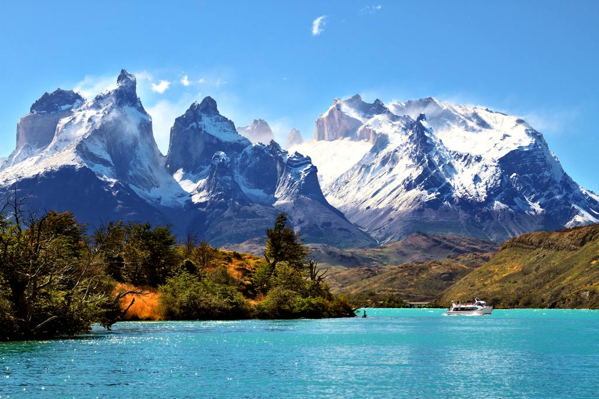

×

Chile
Достопримечательности
1. Остров Пасхи.
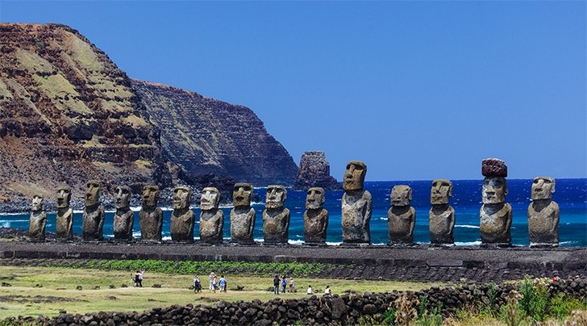
2. Валье-де-ла-Луна.
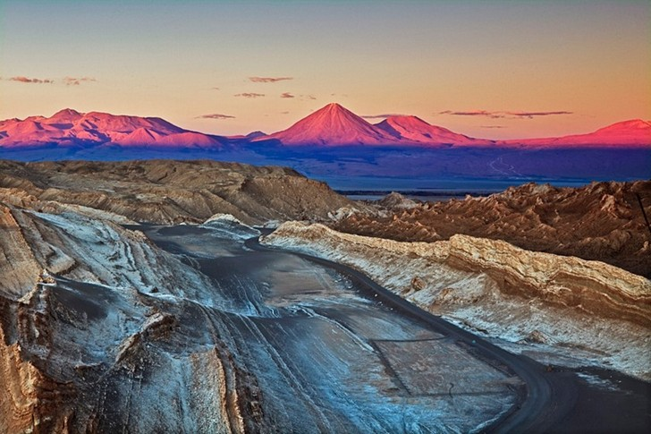
3. Андский Христос.
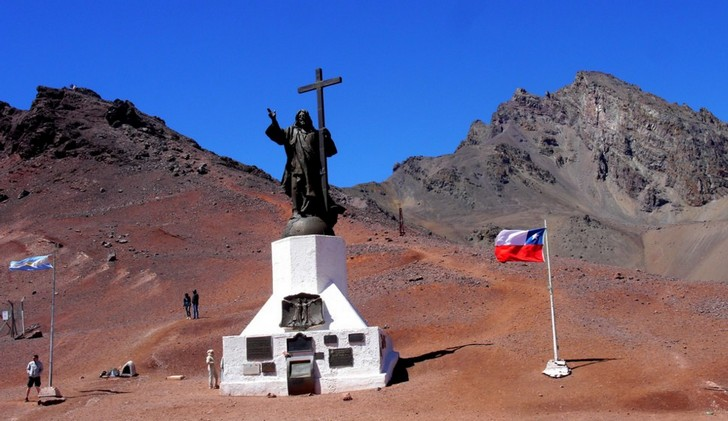
4. Город Сантьяго.
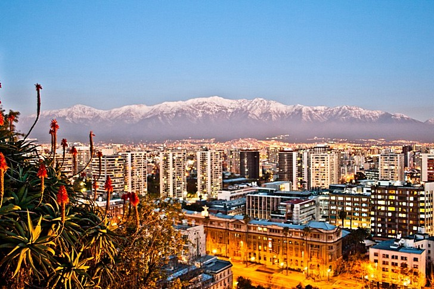
5. Холм Сан-Кристобаль.
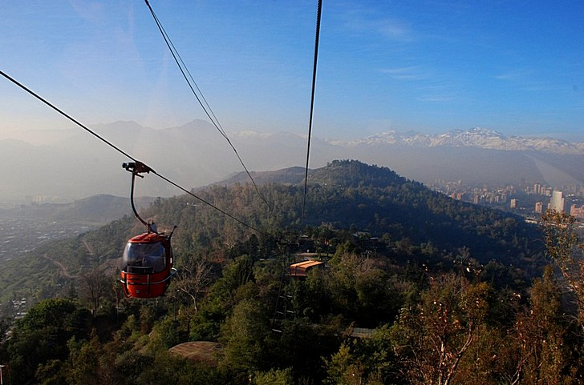
6. Национальный парк Лаука.
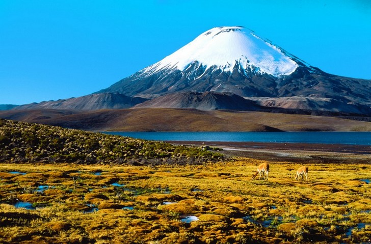
7. Церкви острова Чилоэ.
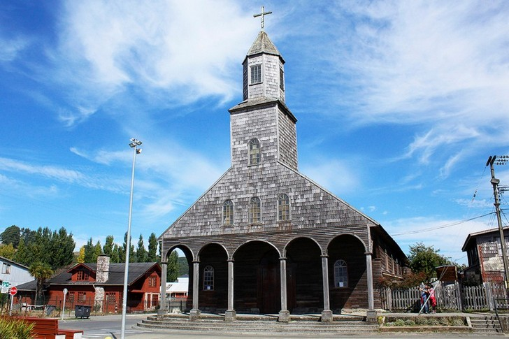
8. Шахтёрский городок Сьюэлл.
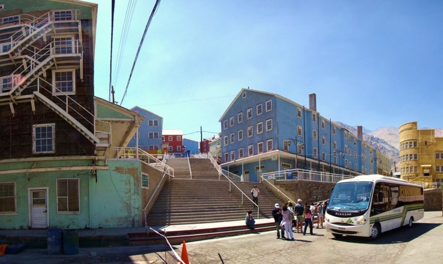
9. Остров Магдалены.
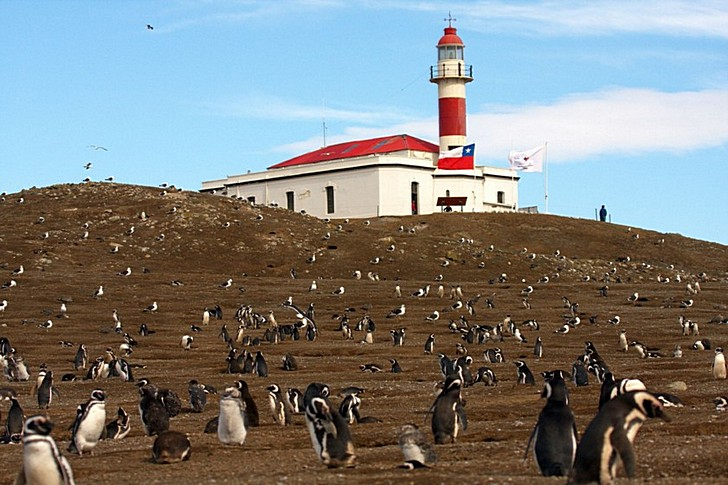
10. Вулкан Охос дель Саладо.
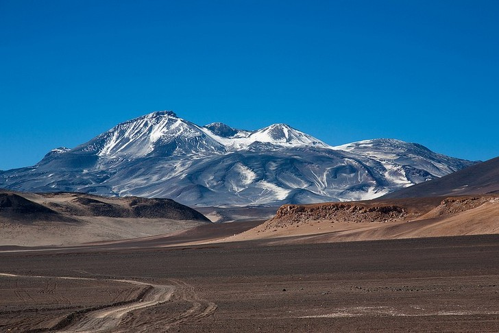
____
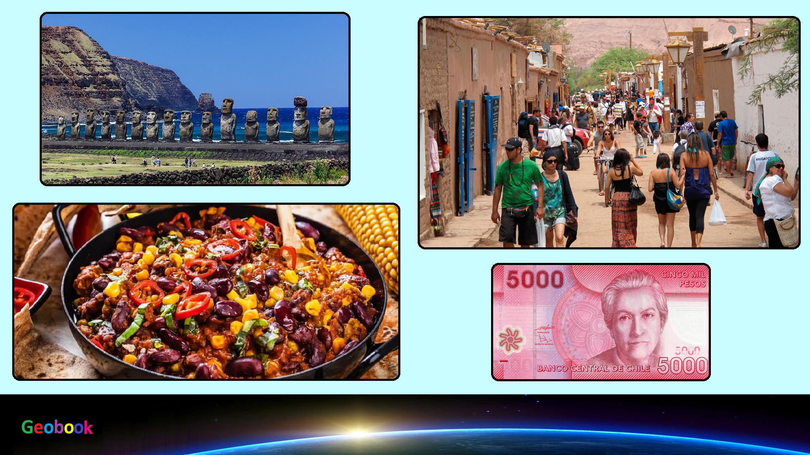